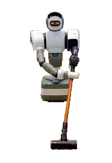

Herbruikbaarheid robots
Millieutoepassing van robots
Voor en nadelen Robotica
Contact
Huishoudelijke robots
Zelfs in je eigen huis kan je niet ontsnappen van de robots.
Bedenk een taak in huis en je hebt er een robot voor. Er zijn veel soorten huishoudelijke robots
maar de meest bekende huishoud robot is de stofzuigrobot.
Dit is een hele handige,
kleine robot die gewoon rondjes rijdt door het huis en de vloer stofzuigt.
Deze robot maakt een soort plattegrond van je huis en waardoor hij precies
alle hoeken van het huis mee pakt en geen onnodige meter maakt, zodra de accu bijna
leeg is rijdt de robot zelfs geheel zelfstandig terug naar het laadpunt. Buiten de stofzuig
robot heb je ook robots die kunnen: grasmaaien, dweilen, zwembad schoonmaken en nog veel meer.
Veel bedrijven zijn ook bezig met dit soort robots maken,
zoals ‘Dyson’ .